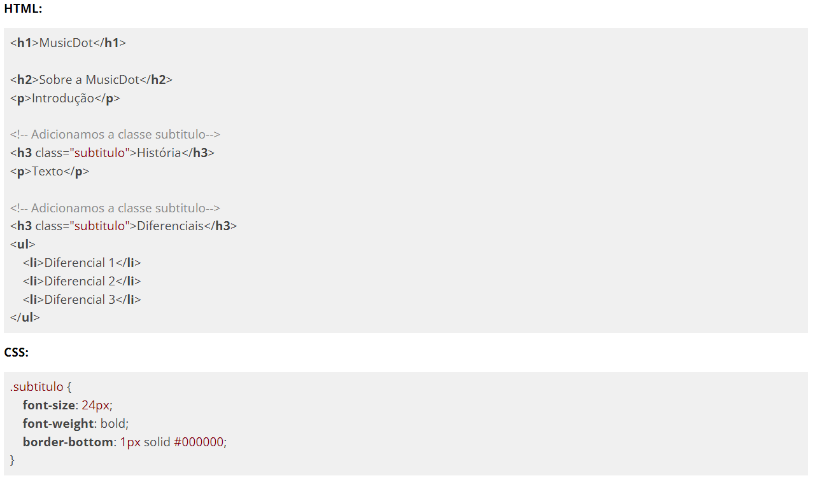

Muitas vezes quando estamos declarando os estilos de uma página HTML, achamos mais fácil usar o seletor de nome da tag ao invés de usar classes. Porém isto pode causar problemas imprevistos se não usado com cautela. Vamos analisar o seguinte código para entender a situação:
No exemplo acima adicionamos estilo nas tags <h2> para ter um tamanho de fonte maior, uma fonte mais grossa e uma borda abaixo para fazer o efeito de linha divisória. Até aqui tudo certo. Mas agora vamos colocar um outro título na página chamada "Sobre a MusicDot" e esse título tem relevância maior do que os dois outros títulos que temos (História e Diferenciais), portanto vamos ter que modificar suas tags para uma de menos importância:
Agora com essa mudança da estrutura do HTML o nosso CSS está alterando um elemento que não é o que nós inicialmente queríamos mudar. Vamos ter que fazer a mudança no CSS para usar as nossas alterações no elemento certo.
Por isso o ideal é declarar estilos com classes ao invés de nomes de tags. Uma dica pra dar nome às classes é elas representarem o papel que estas tags estão exercendo em conjunto com os estilos declarados, no nosso caso, estamos declarando um conjunto de estilo para subtítulos.
Veja como fica o resultado do desacoplamento do conjunto de estilos do nome da tag, para ser agora com classes:

Usando classes, podemos alterar toda a estrutura HTML sem nos preocupar se estas alterações afetarão a estilização que fizemos no começo.